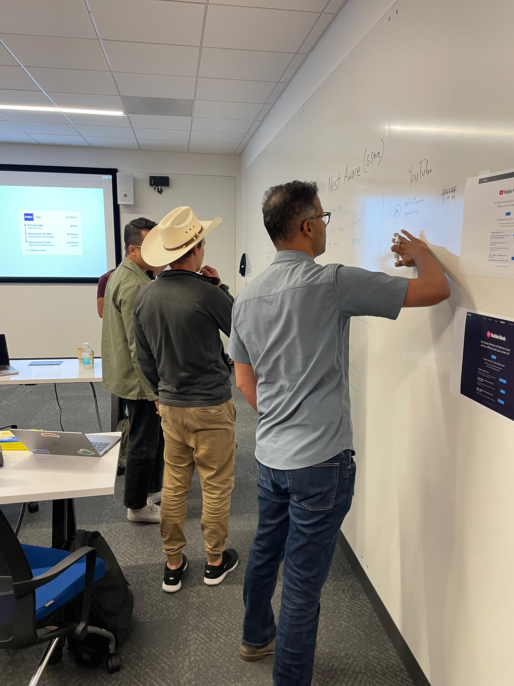

Make design critique a beloved part of the culture.

The Challenge
Tools: Illustrator, Workspace
I was prompted with the team's desire to start a new design critique session for the UX team that would be a place where we could bring early ideas and workshop them. This shouldn't be just any critique session, but should have a brand identity and people should get excited to come and bring work.
Logo & Logistics
I created the logo and brand for the critique session. I wanted to focus on communicating that the session was a place to bring early work, even ideas that are sketched with a pencil.
I also organized the signups for the session and sent out weekly emails to everyone on the team to join the session. It became a tradition to bring a delicious snack to share with the group that everyone could eat while we review and discuss the work. This made things so much more fun and the weekly email usually featured an image of whatever the snack was that week.

Physical Space Design
We actually had a budget at this time to redesign a portion of our work space to customize it for our crit sessions and various workshop activities. I worked with Google's workplace space designers (REWS) to create a unique space where we could gather, display work, run impromptu design jams, and socialize.
This was truly a luxury seemingly of times past when budgets were much more available for things like this. It was so awesome to think deeply about how we wanted to use the space and include details like a glass partition that could double as a whiteboard surface, or a rail system that would hold large pin up boards for printed work, or adding a butcher paper roll to the work table that you could sketch on while sitting there.
Actually making this come to life and have it become part of the culture on the team was an incredible privilege.
